Every session leaves a trace.
Workshops, live sets, quiet studio time.
All recorded in one room in Elamakkara, Kochi.
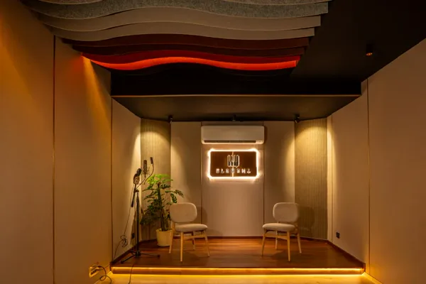

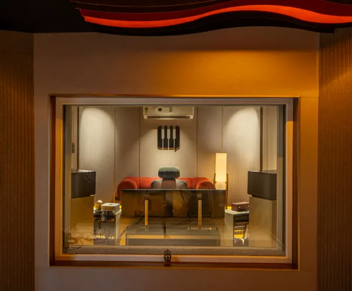
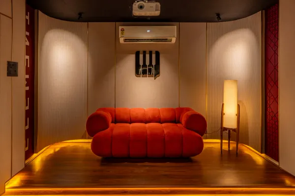
Sing. Paint.
Connect.
Be You.
An evening of singing, listening and painting led by vocalist, mentor and storyteller Tejashree Ingawale.
World Music Day became an excuse to do what the studio's always been about — finding your voice through folk music and creative expression, no matter your background.
No performance pressure. No auditions. Just a circle of people willing to sing a little, laugh a little, and paint while they do it.
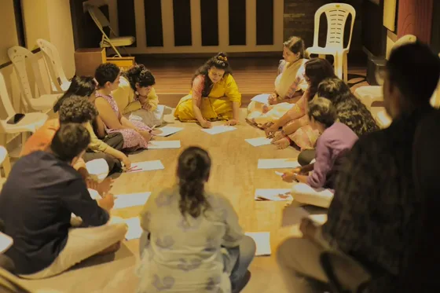
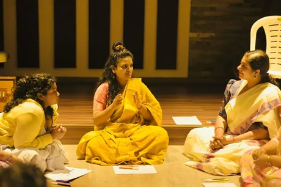
Stitch by
Stitch,
Slow Down.
Beginner-friendly stitches to handmade creations — a relaxed, hands-on group session away from the studio's usual sound and rhythm.
No mic, no monitors, no click track. Just yarn, a hook, and the kind of focus that only comes from making something with your hands.
Everyone leaves with a coaster. Some leave with a habit.
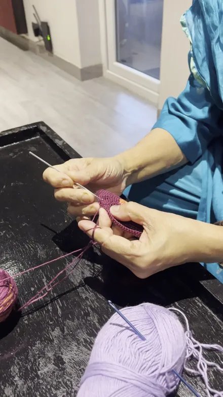

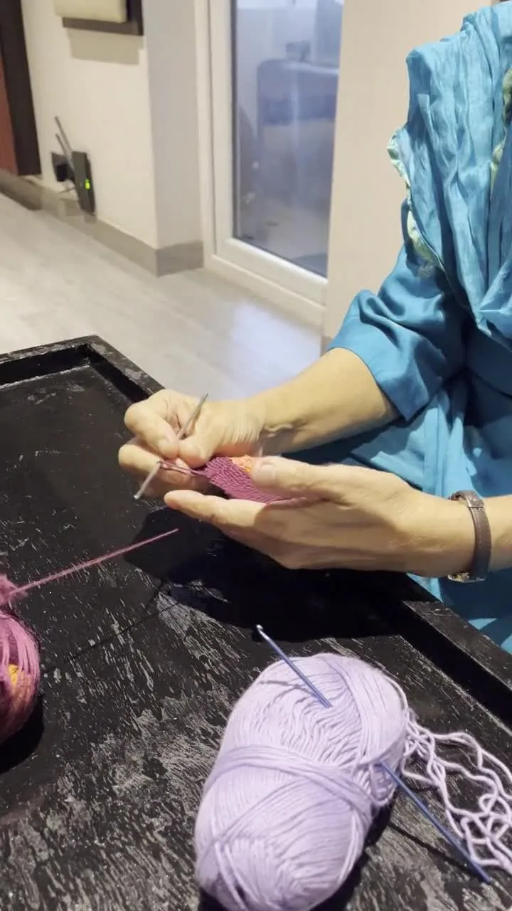
Watch: the stitch, up closeThe Room
Goes Quiet.
Then It Begins.
Solo vocals, full band sets and a chamber quartet — a look at what happens once the lights come up on stage.
Listen sessions. Open mic nights. Masterclasses. Whatever the format, the room stays close and the sound stays honest.
This is the studio's stage life — where the sound you'd otherwise hear on a recording gets performed in front of people who showed up to listen.
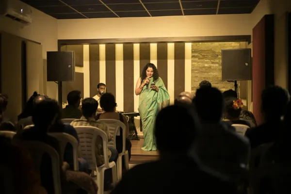
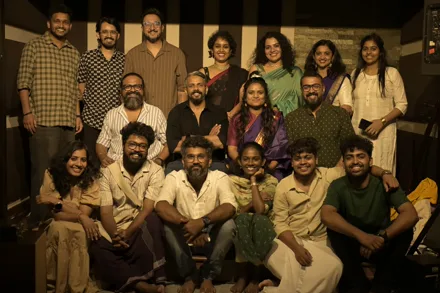
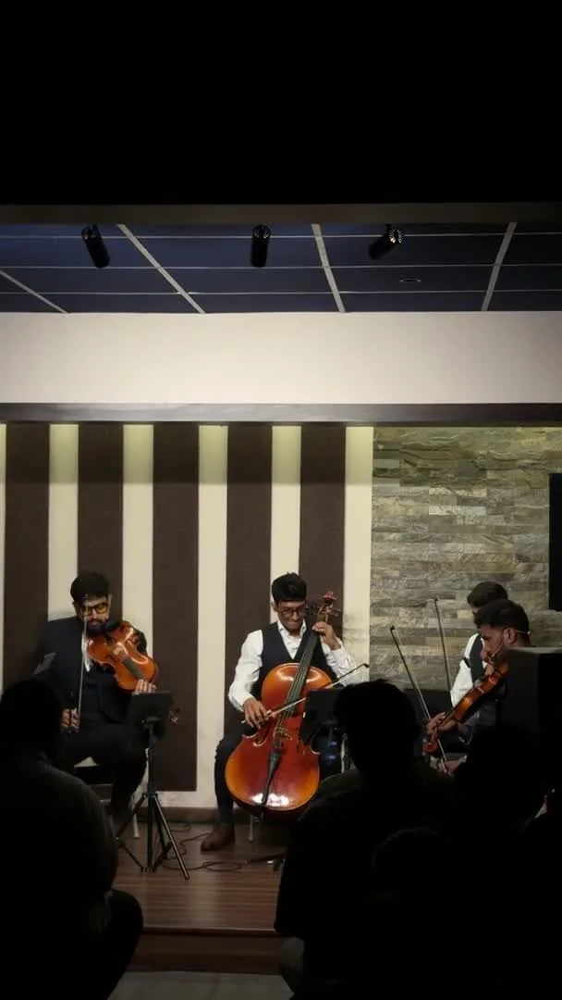
Watch: Jupiter Strings, live and unpluggedSound Is
Memory.
Keep Making It.
Some things happen quietly in a studio — not performed for an audience, just captured. A breath before a take. A laugh between songs. The feeling that this room remembers everything that happens in it.
every session leaves a traceOne Room.
Every
Kind of Sound.
Element Sound Studio isn't just a recording booth. It's a workshop space, a listening room, a Saturday crochet circle, a stage for chamber quartets and open mic nights. Different people, different reasons, same room in Elamakkara.
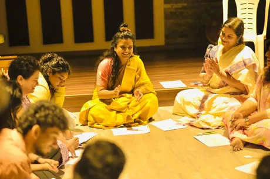
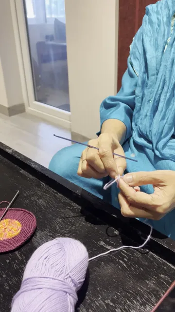
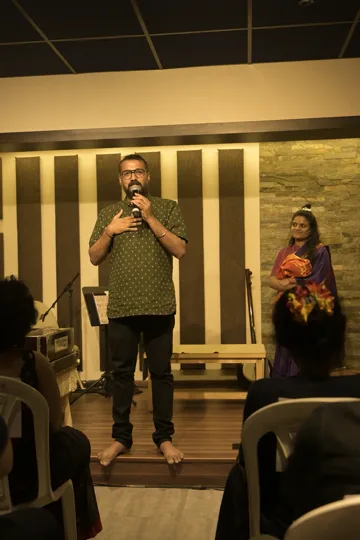
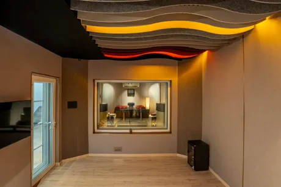
Come Make
Something.
We'll Be Here.
Every session matters
From a first vocal take to a chamber quartet's soundcheck, the room gives the same care to every session that walks in.
Slow down sometimes
Not everything here is about output. Some Saturdays are just about making something with your hands.
The stage is open
Listen sessions, open mics, masterclasses — Element Culture keeps a stage open for Kochi's music and art community.
One room, many rooms
Recording studio, training space, event venue, crochet circle. It's all the same room, just depending on the day.